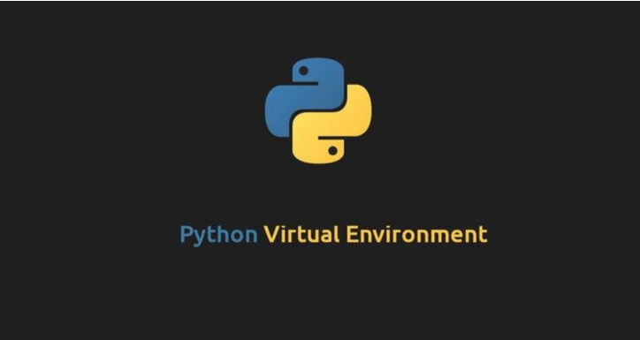

Setting up the virtual environment is especially crucial for machine learning projects (data science projects) because of the number of package modules and different versions.
There are three ways of creating a virtual environment setup in Python. In this post, three different ways of virtual environments will be introduced step by step, conda, pip, venv!
I prefer using conda and venv.

Python Virtual Environment
Conda Environment Set up
Download and install conda if you don’t have it already.
If you haven’t installed git, please install git through conda
1
conda install git
6. Packaging a conda environment with conda-pack
1
2
3
4
5
6
7
8
9
10
11
12
13
14
# install conda-pack
conda install -c conda-forge conda-pack
# Activate the desired environment
conda activate environment_name
# set the path to desired directory to save the package cd path/to/desired/directory.
# pack your environment (it might take few minutes)
conda pack
# environment is packaged as a tar.gz file
ls
7. Unpackaging a conda environment with conda-pack
1
2
3
4
5
6
7
8
9
10
11
12
13
14
# create a folder for the environment
mkdir <environment_folder>
# Uncompress the environment in the folder
tar xzvf <environment_name>.tar.gz -C <environment_folder>
# check the folder
ls
# Activate the environmentsource <environment_name>/bin/activate
# Deactivate the environment source <environment_name>/bin/deactivate
pip Environment Set up
1. Create a virtual environment
1
python -m <virtual environment name>
2. Activate this virtual environment
1
source <virtual environment name>/bin/activate
after doing this, you may notice the prompt adds the name of the virtual environment
1
(<virtual environment name>)$
3. Installing list of packages in requirements.txt
1
pip install -r requirements.txt
4. Useful command
show a list of all installed python modules
1
pip freeze
show a list containing only the outdated modules
1
pip list —outdated
provides a list of installed modules in “requirements.format”
1
pip list
provide specific information about the pandas module